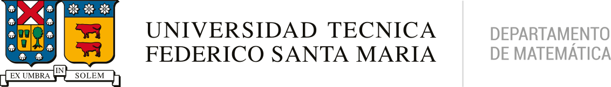

| Home | Program | Directions |
Ecostat is a small conference on Advances in Statistical Methods for Ecology.
EcoStat's organized by the profesors Aaron Ellison & Ronny Vallejos, and sponsored by Universidad Técnica Federico Santa María & Centro Avanzado de Ingeniería Eléctrica y Electrónica (AC3E). Contact: ronny.vallejos@usm.cl
|
|
 |